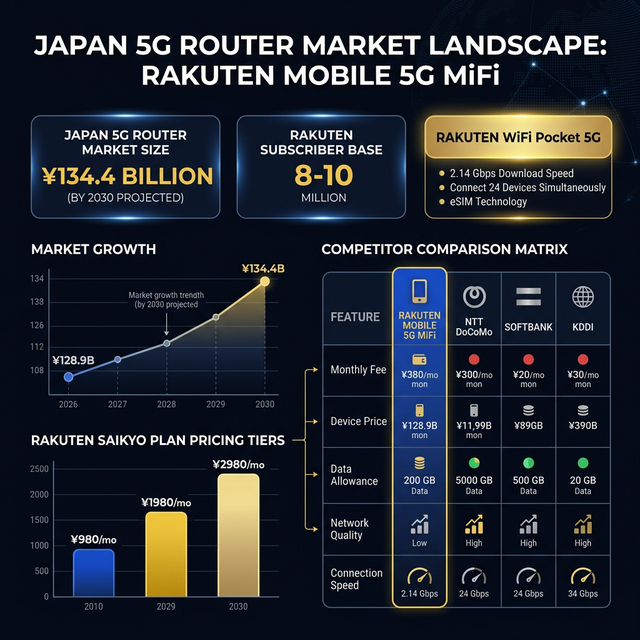

ANTIGRAVITY
OS
Upcoming Meeting
Export PDF
Rakuten Mobile
Meeting Preparation & Intelligence Dashboard
AI Audio Briefing
Market Landscape Infographic

Knowledge Readiness Test
Rapid Review Flashcards
Question
Loading...
Click to flip
Answer
Loading...
1
/
10